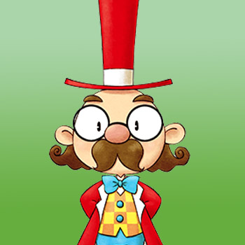

Thomas vive con su hijo, Harris, al lado de la Tienda General. Thomas ha sido alcalde de Mineral Town durante mucho tiempo; ¡Su familia ha servido a la ciudad durante generaciones! Conocía al abuelo del protagonista y se alegra al ver que alguien cercano al viejo granjero aceptó hacerse cargo de la granja familiar. Sin la granja, a Thomas le preocupa que el pueblo se seque y la gente se mude.
Además de garantizar el buen funcionamiento de la ciudad, Thomas es responsable de preparar las fiestas locales. A menudo estará en Rose Plaza, atendiendo el tablón de anuncios públicos.
| Cumpleaños |
25 de verano |
|---|
| Horario |
- Thomas pasa todo el lunes a viernes dentro de su casa.
- El sábado visitará la Tienda General de 7:20 am a 10:00 am, luego a la casa de Ellen hasta la 1:00 pm, luego a la Plaza Rosa de 2:00 pm a 4:00 pm, y finalmente regresará a casa.
- Los domingos se salta la visita a la tienda y va directamente a la de Ellen.
- Si el fin de semana llueve, visita la posada durante la tarde en lugar de ir a Rose Plaza.
|
|---|
Thomas cuenta con un evento el 25 de invierno pero requiere de cierto requicito y lo puedes consultar en la seccion de evento.
Preferencias de regalos
La mejor forma de mejorar la amistad con este aldeano es siempre regalar las cosas que le gusta una vez por dia.
|
- Fondue de queso
- Risotto de queso
- Mascarilla
- Collar
- Perfume
- Diamante rosa
- Bloqueador solar
- Pendientes
- Pastel de manzana
- Soba con tempura
- Agua de uvas silvestres
- Harina de trigo sarraceno
- Broche
- Vestido
- Pulsera
- Concentrado de uva premium
- Churros
- Pizza margarita
- Postre de boniato
- Zaru soba
- Té relajante
- Torrija
- Diamante
|
|
- Queso (C/T)
- Huevo (C/T)
- Torta de fresa
- Leche (C/T) (C/A)
- Brotes de bambú
- Miel
- Huevo de las termas
- Hongo pino
- Mochi
- Piña
- Patata
- Daifuku
- Hojas de Elly
- Puré De Patatas
- Huevos benedictos
- Sopa de miso
- Oden
- Tortita
- Cocido
- Potaje de calabaza
- Tempura
- Zenzai
- Udon con tempura
- Zumo de piña
- Calabaza
- Quiche
- Fresa
- Nabo
- Boniato
- Torta
- Tofu de almendra
- Baumkuchen
- Empanadillas de luna
|
|
- Todas las hierbas silvestres
- Lata vacía
- Todas las gemas y minerales
- Rama
- Hierba
- Bota de goma
- Forraje
- Fósil Antiguo
- Roca
- Tesoro Pirata
- Alimento para pollo/conejo
- Sushi
- Sashimi
- Espinas de pescado
- Piedra Tomatosetta
- Carta en botella
- Madera
- Piedra
- Madera Dorada
|